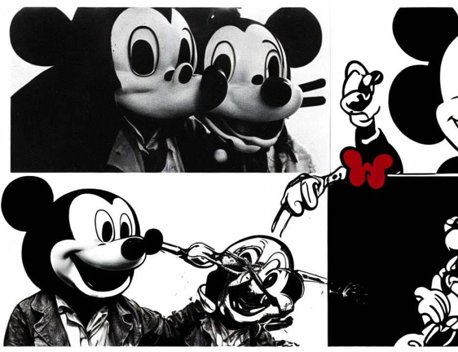

15 to travel soon; is that right?
16 A. Yes.
17 Q. And Mr. Odeh related to you over these interviews that he
18 was told that he assumed that the travel would include his
19 wife and his child, right?
20 A. Yes.
21 Q. Mr. Odeh further told you that he informed Mustafa that he
22 would work on getting his documents together legitimately so
23 that he and his family could travel; isn't that correct?
24 A. I am not sure about that. He wanted to go with his
25 family, that's for sure, but I don't know about -- yes, he did
SOUTHERN DISTRICT REPORTERS (212) 805-0300
1711
12skbin3
Anticev - cross
1 say that he would try to get more than one passport if that
2 meant his family, fine. But then they said no, you get one
3 passport for yourself.
4 Q. That's right.
5 THE COURT: Who said you get one passport?
6 THE WITNESS: Saleh.
7 Q. Ultimately Saleh told him that.
8 A. Saleh.
9 Q. And Saleh told him that a little further down the line
10 when Saleh was a little anxious about the delay that Mohamed
11 was having in getting his passport through regular channels,
12 right?
13 A. I didn't get the last part.
14 Q. I will rephrase it. The statement that Saleh made to
15 Mohamed, which was to just get one passport, and even if it
16 has to be fake get a passport and be ready to go, this
17 statement was made a little further down the line; isn't that
18 right?
19 A. Yes. I don't know if Saleh said that. I recall that as
20 maybe being from --
21 Q. Mustafa?
22 A. Mustafa saying, but on the orders of Saleh.
23 Q. This was after there was some delay on behalf of Mohamed
24 to get his paperwork together through regular channels; isn't
25 that right? Isn't that correct?
SOUTHERN DISTRICT REPORTERS (212) 805-0300
1712
12skbin3
Anticev - cross
1 A. Yes.
2 Q. Mr. Odeh had indicated to you that in the six years that
3 he had been in Al Qaeda, he had never had that kind of
4 pressure put on him before to move so urgently; isn't that
5 right?
6 A. Yes.
7 Q. He also indicated to you that he really had a willingness
8 to stay in Kenya, that he liked Kenya and he wanted to stay
9 there.
10 A. Yes, he did indicate that.
11 Q. What Mr. Odeh has indicated to you is that around the time
12 he had this conversation with Mustafa he was living in Witu,
13 right?
14 A. Yes.
15 Q. And Witu is an area that is the sub -- it's a rural area
16 in Kenya, isn't that correct?
17 A. I don't know.
18 MR. RICCO: Your Honor, I think this map has been
19 previously identified of the Kenya area.
20 I am sorry, Judge. I am informed by Mr. Wilford that
21 it was Odeh C but they couldn't get it up yesterday. So with
22 the permission of the court it is being displayed to the jury.
23 I am sorry. We would like this map marked as Odeh C.
24 MR. FITZGERALD: No objection.
25 THE COURT: You are offering it?
SOUTHERN DISTRICT REPORTERS (212) 805-0300
1713
12skbin3
Anticev - cross
1 MR. RICCO: Yes, your Honor.
2 THE COURT: Received.
3 (Defendant's Exhibit Odeh C received in evidence)
4 Q. Mr. Odeh indicated to you that he was in the carpentry
5 business in Witu, right?
6 A. Yes. Furniture business he called it.
7 Q. The furniture business, OK. Never been to Witu, had you?
8 A. No.
9 Q. Never seen the furniture in Witu?
10 A. No.
11 Q. What Mr. Odeh indicated to you, that he happened to be in
12 Mombasa on business and he ran into Saleh, and Saleh told him
13 to come to the town of Malindi for a meeting; isn't that
14 right?
15 A. Yes.
16 Q. And Mr. Odeh indicated to you that he came to the meeting,
17 and at the meeting there were other members of Al Qaeda, and
18 at that meeting Saleh stated to the group that he had recently
19 returned from Afghanistan and that Bin Laden was calling all
20 Mujahedeen to return to Afghanistan, correct?
21 A. Mujahedeen and Al Qaeda members.
22 Q. Mr. Odeh indicated to you that afterwards he spoke to
23 Saleh alone and said that he would relocate to Afghanistan
24 because it was an Islamic country and it would be his duty --
25 he used the word duty -- to return to Afghanistan, correct?
SOUTHERN DISTRICT REPORTERS (212) 805-0300
1714
12skbin3
Anticev - cross
1 A. Correct.
2 Q. Odeh recalled to you that he informed Odeh that -- I am
3 sorry. I will strike that.
4 Mr. Odeh indicated after the meeting that he returned
1